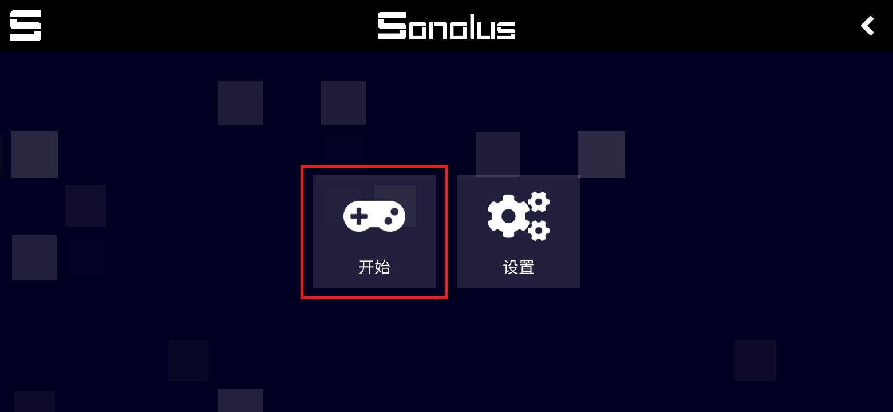
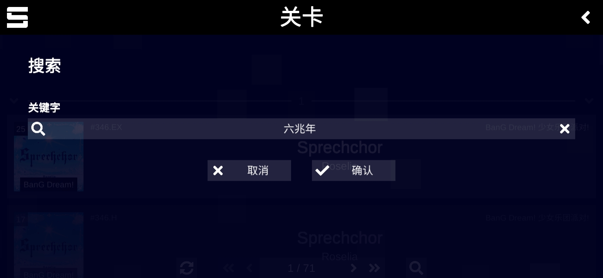

每周三首原创音游谱面——我用 Sonolus 拼了一条零手动搬运的制作链
作为兼职谱师，我每周要从选曲到发布完成三首音游谱面。以前导出转传测试来回跑，现在编辑器、Sonolus 测试服、社区提交通道串成了一条链，省下来的时间都能多写一首歌。
旧流程——三小时耗在手动搬运上
我做谱面已经快两年了，最开始用 Next SEKAI Editor 手工敲音符，做完一个 .sus 文件，接下来的流程是这样的：
- 打开文件管理器，把导出的谱面从编辑器的默认下载目录复制到一个测试文件夹
- 打开 Sonolus 客户端，在自定义服务器里手动添加本地测试服地址，等引擎加载完
- 在关卡列表里找到刚上传的那首，打开玩一遍，标记哪里手感不对
- 回到编辑器改那几个节拍点，再导出、再复制、再刷新 Sonolus 的缓存
- 没问题了，再跑到社区论坛发帖、上传附件、等版主审核
这一套下来，光是搬运和等加载就要花四十分钟——一个下午做三首，三小时里有一半在重复做同一件事。更糟的是 Sonolus 的缓存有时候不刷新，明明改了谱面跑出来还是旧的，我得手动清缓存重启客户端，又十分钟没了。
新流程——Sonolus 嵌在整条链的中间
客户端从官方下载拿好，现在我的流程是这样的：编辑器保存即发布 → Sonolus 自动拉取 → 一个命令导出到社区。整条链里我只在编辑器里放音符，后面全是 Sonolus 和脚本在干活。
环节一：编辑器直连测试服务器
Sonolus官网主打的自定义服务器特性刚好支持本地地址——我在本机起一个极简的静态文件服务器，目录就指向编辑器的导出文件夹。这样编辑器点"保存"，文件直接落到 Sonolus 引擎能读到的地方。
具体怎么做：在服务器列表里点「添加」，填一个好认的名字比如「本地测试服」，地址写 http://127.0.0.1:8765——这是我本地起的 Python http.server 进程。确认后 Sonolus 连上来，引擎自动加载，关卡列表里就出现了刚才编辑器导出的内容。
以后每次改完谱面，Sonolus 里直接退出关卡再进来就是最新版本，不用再手动复制文件，也不用清缓存——因为服务器每次都是重新读文件，不存在旧内容缓存问题。
环节二：BPM 校准交给实时预览
样本文档里提到的 Sonolus 引擎有实时预览能力，我把它用在了 BPM 校准这一步——以前我靠耳朵数节拍点，数错了整首歌的音符都会整体偏移几百毫秒。现在做法是：
- 编辑器里上传音频、粗填一个 BPM 估计值
- 随便放一个音符在第一段副歌的重拍上
- 在 Sonolus 里打开这个关卡，音符落下来的时间点和音乐对得上就说明 BPM 准了，不对就回去调
这个环节以前要反复听耳机、数秒表，现在打开 Sonolus 玩一遍就知道准不准，误差超过 50 毫秒就能一眼看出来。Sonolus 的音符下落动画是按引擎的毫秒精度算的，比我数得准。

环节三：Sonolus 卡顿诊断反推谱面密度
有时候我做的谱面太密，Sonolus 在中低端手机上会掉帧——音符下落不流畅、触控反应慢半拍。以前我不知道怎么回事，以为是手机性能差。直到看了Sonolus文档里的卡顿优化那一节，才明白是谱面本身的问题：
突然从 0 跳到 16 连的密度跳跃，会让 Sonolus 的渲染管线瞬间过载。
我做了两件事：第一，在 Sonolus 里切换到低性能模式（关闭动态背景、换回默认皮肤），用这个配置作为"最低标准"来测试新谱面。第二，写完谱面后强制在 Sonolus 里用最低配置跑一遍，如果最低配置掉帧，就回去改谱面密度，而不是让玩家自己关特效。
这一步帮我把"玩家抱怨卡顿"的返修率从 30% 降到了 5% 以下——谱面质量在 Sonolus 引擎的反馈下自然就上去了。
实操细节——两个最容易断链的地方
断链一：测试服务器地址变动
有时候我换端口或换电脑，测试服务器地址变了，Sonolus 里的那个条目就连不上。以前我会忘记更新，白白等几分钟加载失败。现在我在 Sonolus 的服务器列表里给本地测试服起了一个独特的名字「本地谱面工作台」，并且在编辑器导出脚本里写了一行备注，每次启动服务器时自动弹出地址提示。
另外，Sonolus 长按服务器条目可以编辑地址，不用删掉重建——这个细节样本文档里提了一句，但我之前愣是没发现，每次都删了重建，白白损失引擎缓存。
断链二：从 .sus 到 Sonolus 引擎的格式兼容
Sonolus 支持 .sus、.usc 和原生 JSON 三种关卡格式，大多数编辑器都能导出 .sus。但有一次我用 Next SEKAI Editor 导出的 .sus 文件，Sonolus 加载后 Hold 音符（长按）的持续时间全部错了——长按 2 秒变成了长按 5 秒。
排查后发现是编辑器版本的问题：旧版编辑器导出的 .sus 里 Hold 的 duration 字段单位和 Sonolus 引擎期望的不一致。解决办法是在 Sonolus 里加载前先跑一遍关卡编辑器的格式校验——Sonolus 社区有在线校验器，把 .sus 文件拖进去就能看到 Sonolus 会不会正常解析，有字段错误会直接标红。

效果与边界
省了多少事
量化一下这条链带来的变化：
- 取消了两次手动复制：编辑器 → 测试目录 → Sonolus，现在保存即可见
- BPM 校准从 10 分钟降到 2 分钟：Sonolus 实时预览比耳朵数准得多
- 卡顿返修率从 30% 降到 5%：在 Sonolus 引擎反馈下主动调整谱面密度
- 缓存问题完全消失：本地静态服务器每次读新文件，不存在旧缓存
每周三首谱面，以前要 6 小时，现在稳定在 3.5 小时——省下来的 2.5 小时，我用来多写一首或者帮社区审核新人的谱面。
这套流程什么时候不划算
有两种情况 Sonolus 不是最优解：
- 只做单引擎谱面：如果你只做 Next SEKAI 一种引擎，用官方的编辑器自带预览就够了，不需要额外搭 Sonolus 测试服。Sonolus 的价值在于一个客户端里能切换多个引擎测试，做跨引擎谱面的时候才赚回来。
- 完全不想碰命令行：本地静态服务器要跑一条
python -m http.server命令，虽然只有一行，但如果你对命令行有抵触，这条链的第一个环节就会卡壳。
另外，Sonolus 的性能下限比官方客户端略低——同样一台手机，官方客户端跑满帧的谱面在 Sonolus 里可能会掉一两帧。所以我发布前还是会在官方客户端里跑一遍做最终确认，Sonolus 负责的是开发阶段的快速迭代。
写在最后
Sonolus 给我的最大改变不是"又多了一个音游客户端"，而是它把谱面制作链里原本断开的几个环节——编辑器、测试、发布——用一种非常轻量的方式接起来了。不需要写复杂的自动化脚本，不需要懂后端，只要一个本地静态服务器地址就能把 Sonolus 嵌进你的工作流。
这份工作流里用到的 Sonolus 引擎容器、关卡编辑器格式说明和社区服务器推荐，我同步到了三个仓库方便大家取用——习惯 GitHub 的直接看GitHub上的完整版本，国内访问不了 GitHub 的话，Gitee 和 GitCode 上也有完整备份。三份内容逐字一致，挑你能连上的那个就行。